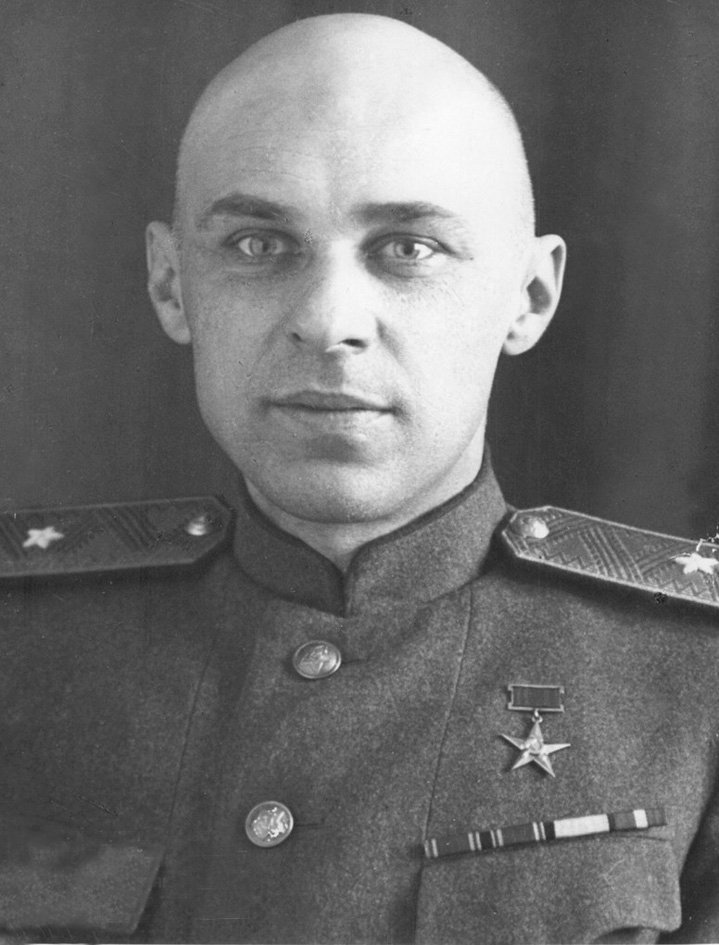

Фокус
Танки, бронетранспортери, важкі бойові машини, інженерні системи та модулі озброєння.


Конструкторська школа
Харківське конструкторське бюро машинобудування імені О. О. Морозова є одним із ключових центрів розробки бронетехніки, де інженерна думка завжди працювала на результат, силу машини та бойову ефективність.
Танки, бронетранспортери, важкі бойові машини, інженерні системи та модулі озброєння.
Не декоративність, а захист, вогонь, хід, живучість і технічна дисципліна в кожному вузлі.
ХКБМ формувало не лише окремі машини, а цілу інженерну традицію, де кожне рішення має працювати жорстко, точно і без зайвого.

Бюро спеціалізується на розробці бойових машин, бронетранспортерів, важкої інженерної техніки, модернізації платформ та створенні бойових модулів.
У центрі уваги завжди знаходяться захист екіпажу, живучість машини, вогнева міць, рухливість та технологічна адаптивність до нових умов.
Розробки ХКБМ вплинули на розвиток танкобудування далеко за межами України та сформували впізнавану харківську інженерну школу.
Історія підприємства бере початок у першій половині XX століття. За десятиліття роботи інженери бюро створили велику кількість зразків бронетехніки, які стали відомими у всьому світі та вплинули на розвиток танкобудування.
Сьогодні бюро продовжує працювати над новими платформами, модернізаціями, системами захисту, компонентами озброєння та інтеграцією сучасних рішень у вже існуючу техніку.
Створення надійної, сучасної та ефективної бронетехніки, здатної працювати в складних умовах та вирішувати реальні бойові й інженерні завдання.
Перейти до каталогу